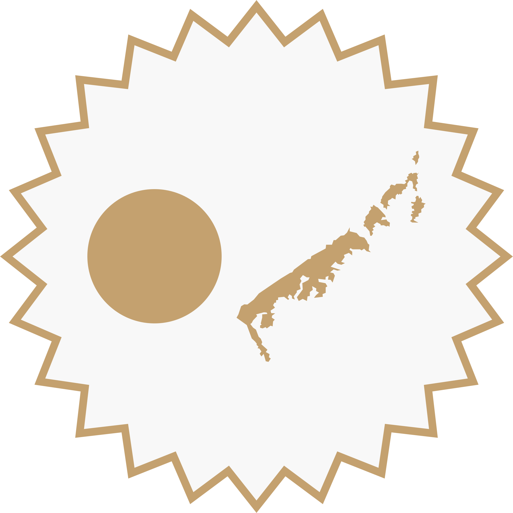

關於 「外傘頂洲共和國」
外傘頂洲共和國（白話字：Gōa-Sòaⁿ-Téng-Chiu kiōng-hô-kok／英文：Republic of Caisancho／日文：ガイサンチョ共和国 ／ 世界語：Respubliko de Caisanĉo , la Ekstera Ombrela Sabloareo），領土由外傘頂洲、箔子寮汕與統汕州組成。臺灣西南海域的沖積沙洲最早可以記錄到近世（early modern period）由西方航海家所繪製的海圖中，與隔壁島嶼（即臺灣島） 類似，外傘頂洲也歷經了新舊帝國主義的殖民，最終在2021年3月3日宣布獨立。
政治
外傘頂洲由流亡政府、參議會與法院組成三權分立的政府架構，不過礙於現實所致，目前實際執行上以共和國政府為主體，立法權與司法權因形勢凍結。對外關係上設有主則對臺事務的「外傘頂洲共和國駐臺灣辦事處」與對中事務的「國務院外傘頂洲事務關你屁室」。
旗幟與紋章
外傘頂洲的「藍底夕洲旗」以象徵黑水溝的藍黑色與白色雲層上下分層，鑲上黃褐色的夕日與沙洲，排列方式正是致敬1950年代在日本東京成立的「臺灣共和國臨時政府」所使用的藍底日月旗。

國旗

陸軍旗
海軍旗
郵政旗
國徽

夕洲章
以此為基礎，另有海軍、陸軍與郵政旗。
地理
外傘頂洲介於澎湖水道與東石潟湖之間，南端由北回歸線貫穿，島嶼由濁水溪及其支流沖積而成，自西南而東北分別為外傘頂洲、箔子寮汕以及統汕洲，依據當前沙土流失速度估算，外傘頂洲島體最快2028年，最晚於2060年將會完全消失。
外傘頂洲島廓